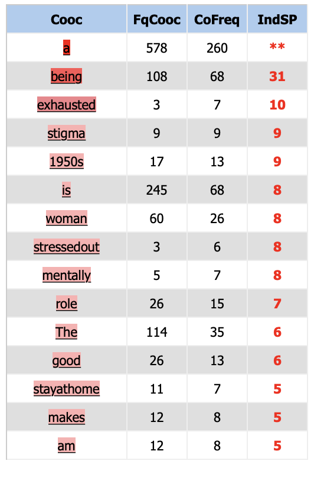
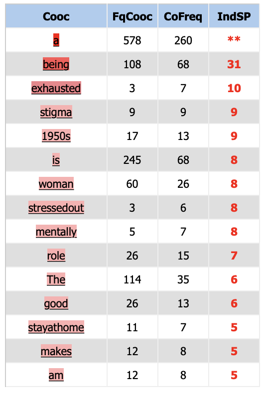

Anglais
 
Selon notre observation, d'un c“t‚ nous avons constat‚ que le mot "housewife" est associ‚ au mot "duties" et "good", ce qui refl?te la perception et les attentes du r“le de la femme au foyer.
De l'autre c“t‚, nous avons observ‚ certains mots ? connotation n‚gative tels que "stressed", "mentally", "exhausted" et "disadvantages". Ces mots montrent le dur travail et le stress que subit le r“le de la femme au foyer dans la vie.
CONNOTATIONS NEUTRES
Nous remarquons un mot ‚vident concernant l'‚poque : "1950s", qui est ‚troitement li‚ au contexte de la p‚riode, lorsque, apr?s la fin de la Seconde Guerre mondiale, on assiste ? un retour des femmes am‚ricaines ? la vie familiale. La "happy housewife" ‚tait la quintessence de l'image de la femme am‚ricaine des ann‚es 50. Cette image ‚tait ‚troitement li‚e ? la vision traditionnelle des femmes en Am‚rique, ? l'ombre de la guerre froide, ? la th‚orie acad‚mique et aux r‚alit‚s de la situation.
De plus, il existe ‚galement des descripteurs de la nature des housewife, comme "married".
De plus, nous pouvons aussi remarquer des mots-outils qui n'ont donc ni connotations particuli?rement positives ou n‚gatives : "is", "or", "A".
Pour l?anglais :
Nous avons observ‚ que sauf notre motif ® housewife ¯, les mots ®husband¯, ® children¯, ® home ¯ ® work ¯, ® family¯, ® love ¯
apparaissent le plus fr‚quemment dans le contexte anglais. Nous pouvons observer que cela est diff‚rent que fran‡ais : le ® housewife¯ a une connection solide avec ®husband¯ et ® love¯. Nous pouvons proposer l?hypoth?se que cette diff‚rence est apport‚e par le choix de corpus ;il y a aussi la possibilit‚ que dans les contextes anglais, les gens ont tendance ? associer le ® house wife¯ avec ®husband¯ et ® love¯. Pour r‚pondre cette question, il faut on faire les ‚tudes plus pr‚cises sur les corpus
sous les normes concr?tes.